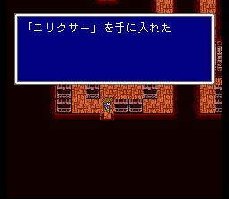
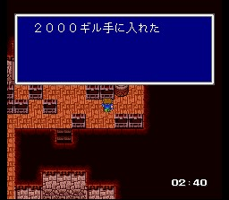

칼낙성
칼낙성에 가보면 불들이 전부 꺼져 있어서 보물상자들을 챙길
수 있습니다. 다만 시간이 10분 뿐이고 많은 보물상자가 적들이 나오는 데다가, 성문
앞에서 데스크로를 배우려면 시간이 제법 여유가 있어야
하니 이 모든 것을 챙기기는 것이 쉽지만은 않을 겁니다.
하지만 다 챙기면
엘릭서가 상당량 확보되고, 희귀한 아이템도 몇 개 있습니다. 익숙해지시면 기가스에게
에어로라까지 배우고 성문 앞에 도착해도 시간을 2,3분
남길 수 있습니다.
팁이라면, 환경설정에서 대기모드로 해 놓으시면 아이템이나 마법창을 열었을 때 시간이 안 가므로 행동이 발동하는 시간을 아낄 수 있습니다.
힘들게 상자들을 털고 성문 앞까지 도달하면 군장 한 놈과 칼낙 세 마리가 나오는데, 칼낙을 모두 잡으면 군장은 아이언크로로 변신합니다. 이 녀석은 데스크로를 쓰니 반드시 여기서 배워두시는 것이 게임 진행에 큰 도움이 됩니다. 시간이 최소 40초 정도는 남아야 여유있게 배울 수 있습니다. 적 자체는 약해빠졌으니 걱정할 필요는 없습니다.
탈출 후 닌자, 마수사, 풍수사를 얻습니다. 날아간 두 개는 나중에 크레센트에서 얻게 됩니다.
이제 나와보면 여왕이 막아놨던 고대도서관 가는 벽이 없어져 있습니다. 바로 고대도서관으로 직행해도 되지만 시드의 낙심 이벤트를 보시려면 먼저 화력선으로 갑시다.